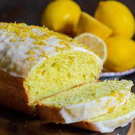

🍋Grandma's Lemon Drizzle Cake Recipe🍋
About the Recipe:
Preparation Time:
15 mins
Cooking Time:
45 mins
Level of difficulty:
Easy
Number of servings:
6

Ingredients:
225g unsalted butter
180g caster sugar
4 eggs
225g self-raising flour
1 lemon, zested
2 lemons, juiced
65g caster sugar
Recipe for the cake:
Pre-heat the oven to
180°C.
Beat together the butter and caster sugar until creamy, then add the eggs, one at a time,
slowly mixing through.
Sift in the self-raising flour, then add the lemon zest and mix until well combined.
Line a loaf tin (8 x 21cm) with greaseproof paper, then pour in the mixture and level the top with a spoon.
Bake for
45 to 50
minutes.
Recipe for the lemon drizzle:
Mix the lemon juice and caster sugar to make the drizzle.
Prick the cake all over with a fork, then pour over the drizzle –
Let the juice sink in.
The sugar will form a sweet, crisp topping.
Leave the cake in the tin until completely cool before serving.
Finding more recipes online:
You will more recipes on the BBC Good Food website:
https://www.bbcgoodfood.com/